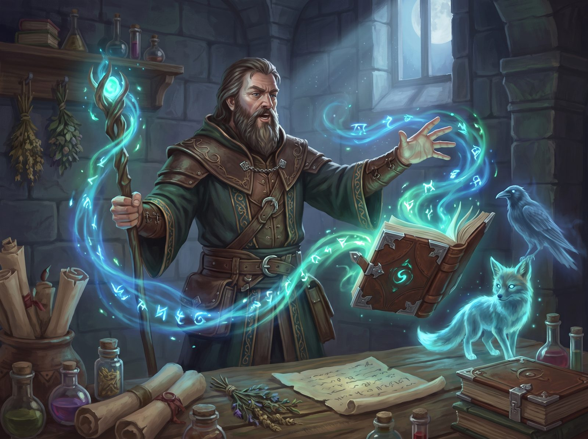

Incantation Magic is an alternative to the standard magick system and allows magic casters to have an arsenal of incantations unique to the caster only.


Introduction
Every living creature has Magical Aptitude (MA), but only a few have a significant amount - which is 1 or more in gaming terms. Those who have a significant MA can use that to affect a situation (add or subtract as much MA as you want or can to any skills roll) - but doing so requires a whole month to recover that MA.
Someone with significant amount of MA can learn to focus it into what is commonly known as a Womp - a sudden release of focused magical energy. A minimum of 1 MA is spent in releasing a basic Womp - but more can be spent in one Womp to enhance its effect. The Womp will have a tiny personalized effect - like making you more awake, making others around you slightly nauseated, creating a soft wind, ripples in water or some such. The effect of the Womp reflects the individual's personality. Such a focused release of MA requires only a good night's sleep to regain the magical energy. The Womp has a DR of 0 and will not be so strong as to significantly affect self or others in gaming terms (cannot add or subtract any numbers to the target's attributes, skills or otherwise). A Womp would normally take 1 round to cast, have a range of 3 meters or less, the effect lasting for 1 round while requiring active focus for that duration.
For a magically talented person to go from naturally spending MA during a month to focus the MA to a basic Womp requires training by a mage with a magic lore of at least 12. It is also possible to acquire that ability through magical rituals, reading special scrolls or from a severe shock, trauma or enlightened magic experience.
From the Womp, the person can start training personalized magic incantations - a release of magical energy that has focused effects. The person can start adding a certain amount of MA to a basic Womp and by that create a specific incantation. One must add at least 3 MA to evolve the Womp (or any incantation) into a new incantation. Example; A wannabe mage has a basic Womp that makes people around her slightly nauseous for 1 round by releasing one MA and making the DR roll of 0. By adding 3 MA to the Womp, she can make the nausea last for 2 rounds and actually give those around her -1 in status for that long (effects on target's attributes or skills normally are 1 per two added of MA). If she keeps up training that specific enhancement to her Womp (2 rounds duration/-1 in status), she will eventually convert the beefed-up Womp into a new incantation with DR 3 (she calls it "Nausea"). That incantation will only require 1 MA to cast, but now she will have the opportunity to add MA while casting that incantation in order to enhance the effects of the incantation.
There are a few rules when changing an incantation by adding MA when it is cast or when forging a new incantation with higher DR:
- It requires 2 additional steps to add one to the effect, double the range, add duration or reduce the casting time for an incantation one level lower on the "time scale for incantations". Additionally, when forging a new incantation:
- It must be sufficiently different from any other incantation the caster has - at least 3 "steps" in any direction from any other incantation.
- For every 5 in DR, an incantation gets a casting time one level higher on the "time scale for incantations".
A magically talented person will go from naturally spending MA to boost skill rolls during a month to focus the magic energy into a basic Womp that cost one MA (recovered by one night sleep). By adding MA when Womping, one can enhance the effect or duration or reduce the casting time. One can turn such an enhancement Womp into a new incantation by practicing it over time. The new incantation will have a DR equal to the amount of MA used to enhance the Womp, and the new incantation will then require only one MA to cast. The caster names the incantation appropriately and adds it to the growing arsenal of incantations. Any incantation cost one MA to cast, but can be enhanced by adding more MA to it. Adding two in MA will reduce casting time, double the range, add one to the effect or make it go from Active to Passive. The MA added to enhance an incantation becomes the additional DR of a new forged incantation if the caster whish to add it to the arsenal.
Any incantation directly affecting the mind of a target can be resisted by that target, and the caster must add the target's Magic Defense to the DR for it to take effect. If an incantation is cast on a group of people, the caster makes a roll and any target that has a Magic defense less then the roll minus the DR of the incantation is affected.
Think of the Womp as the stem of a tree, and branches and leafs as incantations evolving from that stem. One can always go back to the stem or earlier branches and evolve new incantations from there.
It is even possible to learn new Womps and evolve entirely new "trees" of magic.
Magic Paths
To cast an incantation (or Womp), one will use the Magic Path lore associated with that type of Magic. To evolve a fire type of Womp, one must acquire Fire Magic Lore. Any incantation enhancing perceptions requires Perception Magic Lore, etc.
The table below shows the most common Magic lores, and examples of Incantations.
| Path | Incantation examples |
|---|---|
| Air | Levitation, Fly, |
| Black | Agony, Raise Dead, Curse, Finger of Death |
| Cloud | Fog, Shape Clouds |
| Cold | Chill, Freeze Water, Freeze Target |
| Creation | Create items or magic or life or elements |
| Destruction | Destroy items or magic or life or elements |
| Distortion | Distort images or items or senses |
| Earth | Shape Earth, Wall of Stone, Dig |
| Fire | Create Fire, Fire Strike, Wall of Fire |
| Heat | Warmth, Burn |
| Ice | Ice Strike, Wall of Ice, Freeze Blood |
| Illusion | Create illusions across various senses |
| Lava | Lava Strike, Wall of Lave, Melt Ground |
| Life | Healing, Ease Pain, Change Emotions, Polymorph, Resurrection |
| Light | Cone of Light, Dancing Lights |
| Lightning | Lightning Strike, Electrocute Water |
| Magic | Identify Magic, Wardings, Create Magic Items |
| Manipulation | Manipulate magic or items or senses |
| Nature | Animal Healing, Plant Growth, Find Familiar |
| Nullification | Counterspells, nullify effects |
| Perception | Enhance perceptions, Farsee, Clairvoyance |
| Protection | Armor, Protection from elements or magic |
| Space | Displacement, Teleport, Speed |
| Spirit | Communicate with spirits, exteriorize, possession |
| Summoning | Summon spirits or demons or elementals |
| Swamp | Marsh the Ground, Sink |
| Time | Slow Time, Revisit Past |
| Water | Water Walking, Breathe in Water, Create Water |
Enhancing Incantations
When adding MA when casting Incantations or when forging new Incantations, Weight, Area of Effect and Effect is increased linearly.
Beyond "instantaneous" (inst.), Casting Time and Duration follows this table:
| 1 round | 3 days |
| 2 rounds | 1 week |
| 5 rounds | 2 weeks |
| 1 minute | 1 month |
| 2 minutes | 2 months |
| 5 minutes | 6 months |
| 10 minutes | 1 year |
| 30 minutes | 2 years |
| 1 hour | 5 years |
| 2 hours | 10 years |
| 6 hours | 20 years |
| 12 hours | 50 years |
| 1 day | 100 years |
Range follows this table (using the 1-2-5 series):
| 1 meter |
| 2 meters |
| 5 meters |
| 10 meters |
| 20 meters |
| 50 meters |
| 100 meters |
| 200 meters |
| 500 meters |
| ...etc. |
Incantation evolution
When a new incantation is forged, make a roll on the following table to see how the incantation turns out (if a result is unapplicable, pick the one above on the table):
| 1 = Bad effect | |
| 1 | Add 1 extra to DR |
| 2 | Subtract 1 from incantation effect |
| 3 | Add 1 to casting time |
| 4 | Make Active |
| 5 | Subtract 1 from duration |
| 6 | Subtract 1 from range |
| 2 = Negative effect | |
| 1 | Disoriented, subtract 1 in status next round |
| 2 | Very tired, subtract 1 from Strength until well rested (no less than 1) |
| 3 | Incantation requires one additional Endurance drain |
| 4 | You start yelling backwards for 1 minute (cumulative) |
| 5 | You must speak the formula for the incantation louder |
| 6 | Awkward looking incantation casting |
| 3 = No Change (incantation as intended) | |
| 4 = Change (random effect) | |
| 1 | If you throw a 1 when casting this incantation it is an automatic fumble |
| 2 | Path of the incantation curves (add 3 to DR for pointing) |
| 3 | Sound change |
| 4 | Color change |
| 5 | A flash of light accompanies the incantation |
| 6 | If you throw a 6 when casting this incantation it is an automatic critical |
| 5 = Positive effect | |
| 1 | Add 1 to range |
| 2 | Add 1 to duration |
| 3 | Make Passive |
| 4 | Subtract 1 from casting time (no less than 1 round) |
| 5 | Add 1 to incantation effect |
| 6 | Subtract 1 from DR |
| 6 = Transformation | |
| 1 | Adds an effect from a similar incantation |
| 2 | Adds an effect from a very different incantation |
| 3 | Make incantation more agressive or defensive (player decides) |
| 4 | Transforms to a similar incantation |
| 5 | Transforms to a more powerful version of the incantation |
| 6 | Incantation becomes somewhat intelligent, self-aware or adds a spirit to it |
Criticals and Fumbles
A magick critical occurs when you roll a double 6 when casting an incantation. A Critical roll indicates a successful casting of the incantation. You also roll on the Magick Criticals table below. If the critical is not applicable, pick the one below. Roll first for the category, then for the specific critical.
| 1 = Impression | |
| 1 | Looks really cool |
| 2 | Impressive, adjacent friends get +1 next round |
| 3 | Very impressive, adjacent friends gets +1 next D/2 rounds |
| 4 | Fearsome, foe rolls on fear table with +9 adjustment |
| 5 | Awesome, foe rolls on fear table with +6 adjustment |
| 6 | Wild, foe rolls on fear table with +3 adjustment |
| 2 = Side effect | |
| 1 | Gain 1 experience mark in MA |
| 2 | Gain 1 experience mark in the Magic Path Lore |
| 3 | Gain 1 experience mark in Learning |
| 4 | MA spent for casting the incantation is 1 less |
| 5 | You may cast an additional incantation this round (if Casting Time is one round) |
| 6 | Active incantation becomes passive for the duration of the incantation |
| 3 = Increased effect | |
| 1 | Incantation weight is 1 better |
| 2 | Area of effect 1 better |
| 3 | Range is 1 better |
| 4 | Duration is 1 better |
| 5 | Incantation Effect is 1 better |
| 6 | Add 1 to all incantation characteristics (weight, AoE, Range, Duration, Effect) |
| 4 = Effect boost | |
| 1 | Incantation weight is D levels better |
| 2 | Area of effect D levels better |
| 3 | Range is D levels better |
| 4 | Duration is D levels better |
| 5 | Incantation Effect is D levels better |
| 6 | Add D to both Range and Duration |
| 5 = Special | |
| 1 | Incantation warps into another similar incantation (GM's discretion) |
| 2 | Incantation warps into another similar, but better incantation (GM's discretion) |
| 3 | Disregard the targets Magic Defense |
| 4 | Double ALL incantation characteristics (weight, AoE, Range, Duration, Effect) |
| 5 | Effect is D/2 better and disregard the targets MD |
| 6 | Effect is D better and disregard the targets MD |
6 = Roll twice on this table, ignoring any subsequent 6s, add one experience mark
A magick fumble occurs when you roll a double 1 when casting an incantation. A fumble roll indicates a failure to cast an incantation. You also roll on the Magick Fumbles table below, adding the current MA to the open ended dice roll. If the fumble is not applicable, pick the one above. Roll first for the category, then for the specific fumble.
| 1 = Roll twice on this table, ignoring any subsequent 6s, subtract one experience mark | |
| 2 = Special | |
| 1 | Unconscious for D hours and loose 1 in MA permanently |
| 2 | Unconscious for D minutes |
| 3 | Sleep depravation for D days due to pain, -4 in Status |
| 4 | Affects wrong target in the worst possible way |
| 5 | Affects self (unless supposed to) |
| 6 | You start yelling backwards for D days (the player must yell everything backwards, including incantations cast) |
| 3 = Unwanted effect | |
| 1 | Amnesia – can not cast incantations for D hours |
| 2 | Everybody within 10 meters become hostile towards you |
| 3 | Incantation has the complete opposite effect (GM's discretion) |
| 4 | Dizzy – fall and let go what you have in your hands |
| 5 | Thirsty (dehydrated), -D in Status until you drink D liters |
| 6 | Pain, subtract 3 in Status until Medical Lore roll of 7 succeeds |
| 4 = Stun effect | |
| 1 | Shocked, subtract O+3 in status for one minute |
| 2 | Reeling, subtract O in status for O rounds |
| 3 | Staggered, subtract D in status for D rounds |
| 4 | Stunned, subtract 3 in status for 3 rounds |
| 5 | Confused, subtract 3 in status next round |
| 6 | Off balance, subtract 1 in Status next round |
| 5 = Added effect | |
| 1 | Very drained, subtract 3 Magical Aptitude until well rested (no less than 1) |
| 2 | Very fatigued, subtract 3 from Endurance until well rested (no less than 1) |
| 3 | Very tired, subtract 3 from Strength until well rested (no less than 1) |
| 4 | Drained, subtract 1 Magical Aptitude until well rested (no less than 1) |
| 5 | Fatigued, subtract 1 from Endurance until well rested (no less than 1) |
| 6 | Tired, subtract 1 from Strength until well rested (no less than 1) |
| 6 = Impression | |
| 1 | Terrible for morale, friends get -1 in all rolls for the next D rounds |
| 2 | Very bad for morale, friends get -1 in all rolls for the rest of the round |
| 3 | Bad for morale, friends get -1 in attack for the rest of the round |
| 4 | You make a fool out of yourself, laughter is heard |
| 5 | Botched it, giggles are heard |
| 6 | Awkward looking |